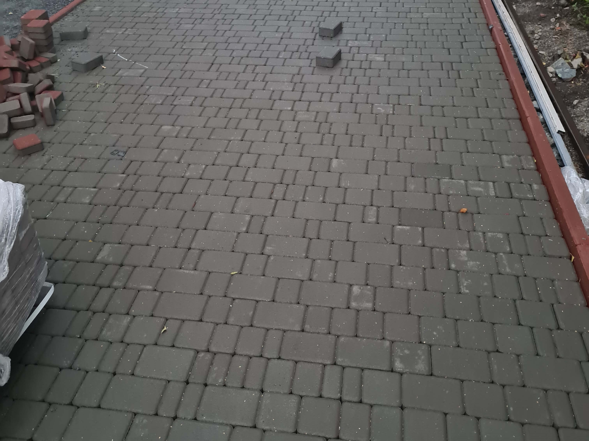
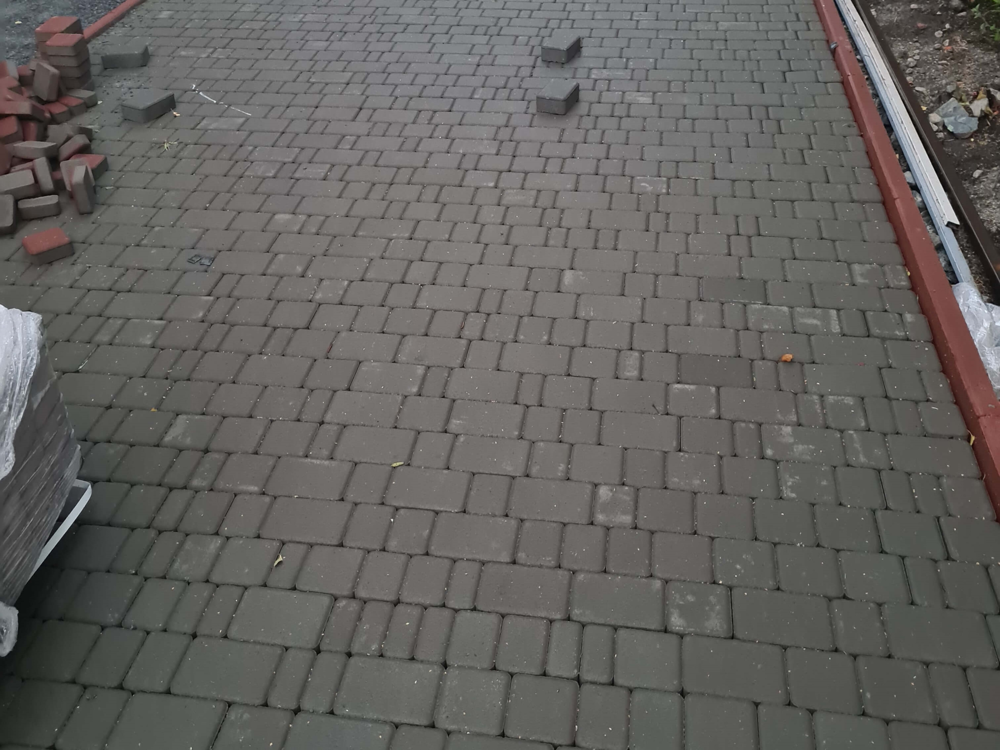

Ремонт дорожнього покриття - це важлива послуга, яку надає ТОВ
"Якість і будівництво", що включає в себе проведення ямкового
ремонту. Ямковий ремонт є необхідним для виправлення
пошкоджень дорожнього покриття, і відбувається з використанням
різноманітних будівельних матеріалів, таких як відсів, щебінь,
бітум та асфальтобетон.
Процес ямкового ремонту розпочинається визначенням пошкоджень
та їх розміру, після чого фахівці обирають відповідні
будівельні матеріали для відновлення покриття. Відсів, що
відіграє роль заповнювача, поєднується зі щебнем для створення
стійкої основи, а бітум та асфальтобетон використовуються для
створення верхнього покриття дороги. Важливо відзначити, що
використання цих матеріалів в процесі ремонту дозволяє досягти
високої якості та тривалої експлуатації дорожнього покриття.
Бітум і асфальтобетон відзначаються своєю стійкістю до
навантажень та зносу, що робить їх ідеальними для використання
в дорожньому будівництві.
Такий підхід до ямкового ремонту не лише відновлює стан
дорожнього покриття, але і забезпечує його довговічність,
зменшуючи необхідність у частих ремонтах. ТОВ "Якість і
будівництво" забезпечує професійний та відповідальний підхід
до кожного проекту з ремонту доріг, гарантуючи якість та
надійність виконаних робіт.

Будівництво доріг - це важливий етап в інфраструктурному
розвитку, і ТОВ "Якість і будівництво" надає високоякісні
послуги у цьому напрямку. Процес будівництва доріг
розпочинається детальним плануванням, включаючи визначення
маршруту, розміру та типу дороги, а також врахування
екологічних та інженерних аспектів.
У будівництві доріг використовуються різні будівельні
матеріали для створення стійкої та безпечної інфраструктури.
Компанія використовує щебінь, відсів, бітум та асфальтобетон
для створення міцного основного покриття та верхнього шару
дороги, що забезпечує її довговічність та стійкість до різних
навантажень. Однією з ключових фаз будівництва є підготовка
ґрунту, включаючи етапи вирівнювання, компактації та
грунтозабезпечення. Це забезпечує стабільність та однорідність
ґрунтової основи перед викладанням дорожнього покриття.
Використання сучасних будівельних машин та технологій
покращує ефективність робіт. Компанія "Якість і будівництво"
прагне надавати клієнтам високоякісні послуги у будівництві
доріг, дотримуючись стандартів якості та технічної безпеки.
Гнучкий підхід до кожного проекту, професіоналізм та
використання передових технологій роблять компанію надійним
партнером у сфері будівництва доріг.
Розмітка доріг та інфраструктурних об'єктів є важливим етапом
у створенні безпечного та організованого руху транспорту.
Компанія "Якість і будівництво" виконує розмітку для доріг,
тротуарів, пішохідних переходів та парковок, використовуючи
спеціальну техніку та дорожню фарбу.
Спеціальна машинка, що використовується для розмітки,
забезпечує рівномірне та точне виконання маркування. Вона
розміщує необхідні лінії та символи відповідно до вимог
безпеки та регулювання дорожнього руху. Особливою увагою при
розмітці керується використанням розмітки з пластику, яка
дозволяє позначати розділові смуги та крайові лінії. Цей метод
включає в себе застосування шару пластику, який містить
світловідбивні скляні кульки. Це забезпечує високу видимість
маркування навіть у низьких світлових умовах та покращує
безпеку на дорозі.
Розмітка є важливим елементом системи
дорожнього руху, сприяючи організації руху транспорту та
забезпеченню безпеки для пішоходів. Вона також
використовується для визначення місць для паркування
транспортних засобів, що сприяє ефективному використанню
простору та підтримує порядок на дорозі.

Компанія "Якість і будівництво" пропонує послуги оренди
різноманітної будівельної техніки, володіючи великою кількістю
власних машин і обладнання. Ця техніка доступна для оренди на
визначений термін і завжди постачається з кваліфікованим та
досвіченим працівником.
Оренда будівельної техніки є
вигідним рішенням для клієнтів, які потребують виконання
різноманітних будівельних завдань. Компанія пропонує широкий
спектр техніки, включаючи екскаватори, бульдозери, грейдери та
інші спеціалізовані машини.
Досвічені працівники, які супроводжують орендовану техніку,
забезпечують високий рівень ефективності та безпеки при
виконанні робіт. Вони мають глибокі знання щодо використання
техніки для риття котлованів, грейдерування доріг та
перевезення будівельних матеріалів.
Спеціалізовані бруківники, які працюють в рамках проекту,
дотримуються зазначеного в кошторисі та укладеного договору
обсягу робіт та ціни. Це гарантує замовнику прозорість та
чіткість у виконанні робіт, а також відповідність бюджету.
Під час вкладання бруківки фахівці враховують
особливості території, враховуючи нерівності та конфігурацію
місця. Це важливо для створення однорідної та естетично
привабливої поверхні. Одним із ключових етапів вкладання
бруківки є підготовка основи. Це включає в себе ретельне
видалення існуючого покриття, компактацію ґрунту та
вирівнювання поверхні. Цей процес дозволяє забезпечити
стабільність та тривалість майбутнього покриття. Формування
дизайну та укладання бруківки відбувається з урахуванням
естетичних вимог замовника. Фахівці ретельно добирають кольори
та форми, створюючи унікальний та індивідуальний дизайн для
кожного проекту.
Важливим елементом вкладання бруківки є
також врахування кліматичних умов та вибір матеріалів, які
витримають екстремальні температури, вологість та інші
природні впливи. Безперечним перевагою вкладання бруківки є її
довговічність та здатність швидко відновлювати та замінювати
окремі елементи. Це робить її екологічно чистим та економічно
вигідним вибором для облаштування прибудинкових територій,
тротуарів та інших громадських місць.

 

Ми приділяємо велику увагу контролю якості та виконанню робіт в строк, щоб забезпечити вас надійними та довговічними результатами